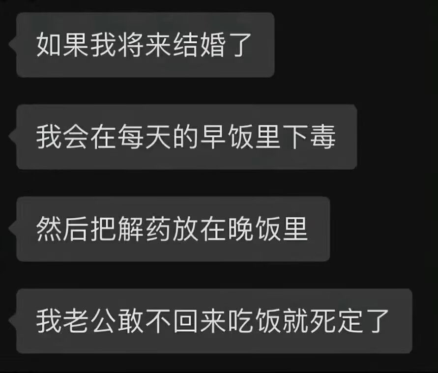

你妈的我如果发现了我就挑一天做好准备在吃早饭之前给sb打晕然后把早饭塞进sb嘴里，等死之后怎么处理再说，这个社会凭什么认为伤害是爱爱人或者只是自己太爱了，伤害怎么能成为性感和爱意Sb吧，特别是你是S喜欢抽人捆人都没问题只要爱人自愿就行，但这你妈要杀人啊，为什么杀人会被认为只是太爱了没错甚至令人渴望为什么，你的爱人爱着你你却要杀了祂，爱人有人格权不是不吃晚饭等于不忠或出轨sb病娇我草你妈，你可以是病娇但不能不说啊😭，就像你性厌恶不能性交一样的强占有欲也要说啊别人凭什么被你占有啊，一些sb强占有欲不说清楚但你发现你已经脱不掉了就是毁了别人人生啊，一群没真正搞清楚自己爱好就认为强欲占有很棒的sb我真是草了，两个人可以永生永世血肉相融，但没有经过两人同意下你们先是有独立人格的人才是相爱的人，项圈，囚禁，捆绑洗白化人类没救了，我支持你可以有相关性爱好且不用受任何指责，但视频平台放些什么项圈其实人不用戴，洗澡是可以不被看单人的是何意味啊
